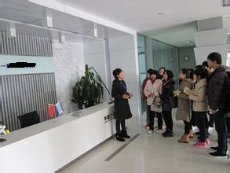

Bachelor’s degree in Mechanical Engineering, HuaZhong
University of Science and Technology, in the year 2013.
Master’s degree in Mechatronics Engineering, with emphasis on software development，HuaZhong University of Science and Technology,
in the year 2016.
Patent: A Low Frequency Signal Acquire Device. Second Author.
Software Copyright: Mobile DRVI Browser System. Second Author.
Essay:Component-based dynamic reconfigurable test system on mobile phone. First
Author.
First generation of remote
network and technical service platform(09/2013-12/2014)
Web Designer/Developer Technologies used:
Asp.Net, Javascript, HTML, SQL
1. Established the SQL database and its access interface
2. Designed and developed three big modules of this web platform including web fore-end
and back stage
3. Integrated web modules, improved the website and published it into Cloud.
Mobile dynamic reconfigurable
virtual instrument(09/2013-03/2015)
Android APP Designer/Developer Technologies
used: Java/Android, XML, JSON, YAML
1. Designed the system architecture, component module, assembly and reactive mechanism.
2. Developed all parts of the APP and finished writing designed document.
3. Accomplished 50+ components and 20+ instrument scripts, functioning very well.
Cloud Medical Platform
of HuaZhong University of Science and Technology(10/2013-03/2015)
Android APP Designer/Developer Technologies
used: Java/Android, WebService, SQL, Bluetooth, Flex
1. Designed and Developed the Android testing APP.
2. Accomplished the connection of mobile phone and Bluetooth data acquisition card,
and signal processing.
3. Developed WebService interface to access Cloud database, and used it to send
data from mobile phone.
4. Completed history data display module using Flex, functioning well in the Android
APP.

Dongfeng Motor Corporation
Technical Center, ShiYan (07/2012-08/2012)
Specialized Production Intern
Participated in basic manufacture operation training. Mastered the industrial product
manufacturing procedure, operation directive rules and enterprise behavior standards.
Depush Technology Co., Ltd.,
WuHan (07/2014-09/2014)
Software Engineer
1. Designed and completed industrial measurement via Android serial port. Used JNI
technology to implement the “Java-C-serial port” structure.
2. Grasped the procedure of product development in companies, and how to communicate
with leaders and teams.
Language: Chinese, English, TianMen Dialect.
Prefession: Great-Java/Android, C++, C#,
HTML, Javascript, SQL
Good- Ajax, JQuery, PHP, Flex
Familiar with C/S and B/S architecture, Web Service, Database, XML and
Component technologies.
Personalities: initiative, responsible,
flexible.
Hobbies: Searching open-source program,
badminton, billiards and folk music.